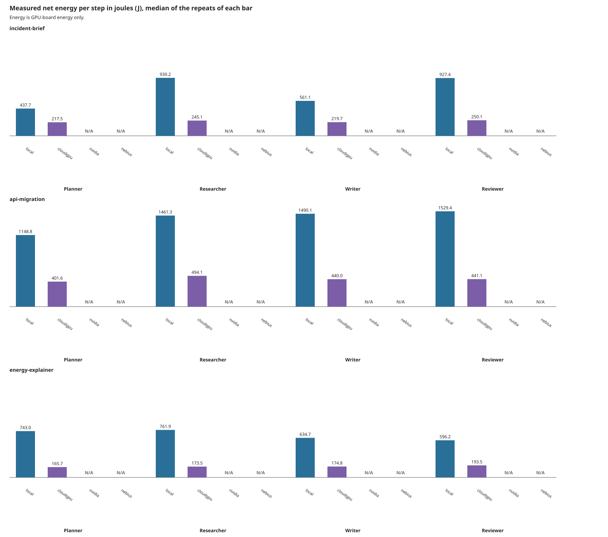

Energy is GPU-board energy only.
Judge calls are excluded from workflow totals.
Self-judging: the judge model is also a workflow model.
Models differ across tiers: local=nvidia/Llama-3.1-Nemotron-Nano-4B-v1.1 (BF16), cloudgpu=nvidia/nemotron-3-nano (FP8), nvidia=nvidia/nemotron-3-nano-omni-30b-a3b-reasoning (N/A), nebius=nvidia/NVIDIA-Nemotron-3-Nano-30B-A3B (N/A)
| tier | task | agent | gross J | net J | avg W | peak W | input tokens | output tokens | latency ms | TTFT ms | cost | quality | labels | flags |
|---|---|---|---|---|---|---|---|---|---|---|---|---|---|---|
| local | incident-brief | Planner | 558.8 [558.5 to 611.7] n=3 | 437.7 [435.7 to 438.1] n=3 | 93.4 [65.7 to 93.5] n=3 | 100.8 [97.9 to 101.6] n=3 | 269 [269 to 269] n=3 | 245 [245 to 245] n=3 | 6015 [5985 to 8744] n=3 | 110 [108 to 3154] n=3 | 0.000036 EUR [0.000036 to 0.000037] n=3 estimated | 3 [3 to 3] n=3 model-judged | measured, estimated, model-judged | baseline-unstable, throttled |
| local | incident-brief | Researcher | 1190.3 [1165.1 to 1235.3] n=3 | 930.2 [914.8 to 963.7] n=3 | 91.9 [91.7 to 93.1] n=3 | 97.0 [96.4 to 97.5] n=3 | 517 [517 to 517] n=3 | 512 [512 to 512] n=3 | 12929 [12447 to 13508] n=3 | 164 [144 to 176] n=3 | 0.000078 EUR [0.000076 to 0.000080] n=3 estimated | 4 [3 to 4] n=3 model-judged | measured, estimated, model-judged | baseline-unstable, throttled |
| local | incident-brief | Writer | 723.6 [708.4 to 739.8] n=3 | 561.1 [550.0 to 581.1] n=3 | 91.1 [89.8 to 94.4] n=3 | 96.5 [95.4 to 101.1] n=3 | 510 [510 to 510] n=3 | 303 [303 to 303] n=3 | 7893 [7875 to 8079] n=3 | 182 [180 to 187] n=3 | 0.000047 EUR [0.000046 to 0.000048] n=3 estimated | 3 [3 to 3] n=3 model-judged | measured, estimated, model-judged | baseline-unstable, throttled |
| local | incident-brief | Reviewer | 1186.3 [1173.6 to 1215.8] n=3 | 927.4 [917.1 to 953.9] n=3 | 92.9 [92.6 to 93.3] n=3 | 97.0 [95.5 to 97.0] n=3 | 1092 [1092 to 1092] n=3 | 512 [512 to 512] n=3 | 12875 [12758 to 13025] n=3 | 283 [271 to 291] n=3 | 0.000077 EUR [0.000076 to 0.000079] n=3 estimated | 4 [4 to 4] n=3 model-judged | measured, estimated, model-judged | baseline-unstable, throttled |
| local | api-migration | Planner | 1496.0 [1406.4 to 1529.4] n=3 | 1148.8 [1106.2 to 1181.7] n=3 | 88.4 [87.0 to 94.4] n=3 | 101.6 [100.3 to 102.4] n=3 | 280 [280 to 280] n=3 | 589 [589 to 589] n=3 | 17263 [14927 to 17289] n=3 | 2292 [111 to 2326] n=3 | 0.000096 EUR [0.000092 to 0.000098] n=3 estimated | 4 [4 to 4] n=3 model-judged | measured, estimated, model-judged | baseline-unstable, throttled |
| local | api-migration | Researcher | 1862.1 [1855.8 to 1893.3] n=3 | 1461.3 [1449.3 to 1484.9] n=3 | 93.8 [92.7 to 94.1] n=3 | 99.5 [98.6 to 106.1] n=3 | 873 [873 to 873] n=3 | 768 [768 to 768] n=3 | 20210 [19930 to 20310] n=3 | 237 [232 to 253] n=3 | 0.0001 EUR [0.0001 to 0.0001] n=3 estimated | 4 [4 to 4] n=3 model-judged | measured, estimated, model-judged | baseline-unstable, throttled |
| local | api-migration | Writer | 1898.1 [1856.7 to 1912.7] n=3 | 1490.1 [1459.9 to 1506.4] n=3 | 94.5 [94.2 to 94.9] n=3 | 99.9 [99.6 to 100.1] n=3 | 866 [866 to 866] n=3 | 768 [768 to 768] n=3 | 20202 [19729 to 20285] n=3 | 249 [240 to 256] n=3 | 0.0001 EUR [0.0001 to 0.0001] n=3 estimated | 4 [4 to 5] n=3 model-judged | measured, estimated, model-judged | baseline-unstable, throttled |
| local | api-migration | Reviewer | 1940.5 [1896.7 to 1979.2] n=3 | 1529.4 [1486.7 to 1565.7] n=3 | 95.6 [93.8 to 97.0] n=3 | 104.2 [103.9 to 104.2] n=3 | 1825 [1825 to 1825] n=3 | 768 [768 to 768] n=3 | 20443 [20390 to 20565] n=3 | 465 [453 to 490] n=3 | 0.0001 EUR [0.0001 to 0.0001] n=3 estimated | 5 [4 to 5] n=3 model-judged | measured, estimated, model-judged | baseline-unstable, throttled |
| local | energy-explainer | Planner | 938.7 [937.3 to 1042.5] n=3 | 743.0 [736.3 to 801.2] n=3 | 94.3 [87.9 to 96.9] n=3 | 100.7 [100.5 to 101.9] n=3 | 218 [218 to 218] n=3 | 384 [384 to 384] n=3 | 9993 [9731 to 12001] n=3 | 71 [69 to 2289] n=3 | 0.000062 EUR [0.000061 to 0.000067] n=3 estimated | 3 [3 to 3] n=3 model-judged | measured, estimated, model-judged | baseline-unstable, throttled |
| local | energy-explainer | Researcher | 965.3 [951.4 to 968.5] n=3 | 761.9 [751.4 to 764.9] n=3 | 96.4 [94.4 to 96.8] n=3 | 100.7 [100.1 to 101.4] n=3 | 608 [608 to 608] n=3 | 384 [384 to 384] n=3 | 10112 [9944 to 10121] n=3 | 189 [182 to 202] n=3 | 0.000063 EUR [0.000063 to 0.000064] n=3 estimated | 3 [3 to 3] n=2 of 3 model-judged | measured, estimated, model-judged | baseline-unstable, throttled |
| local | energy-explainer | Writer | 802.9 [776.4 to 812.6] n=3 | 634.7 [612.4 to 640.8] n=3 | 96.3 [94.8 to 96.3] n=3 | 100.1 [98.9 to 103.3] n=3 | 601 [601 to 601] n=3 | 322 [322 to 322] n=3 | 8362 [8154 to 8540] n=3 | 188 [183 to 197] n=3 | 0.000053 EUR [0.000051 to 0.000053] n=3 estimated | 4 [4 to 4] n=2 of 3 model-judged | measured, estimated, model-judged | baseline-unstable, throttled |
| local | energy-explainer | Reviewer | 757.5 [751.5 to 762.2] n=3 | 596.2 [593.3 to 599.5] n=3 | 95.9 [94.0 to 96.2] n=3 | 98.8 [98.2 to 99.0] n=3 | 931 [931 to 931] n=3 | 297 [297 to 297] n=3 | 8023 [7870 to 8092] n=3 | 271 [269 to 276] n=3 | 0.000050 EUR [0.000049 to 0.000050] n=3 estimated | 4 n=1 of 3 model-judged | measured, estimated, model-judged | baseline-unstable, throttled |
| cloudgpu | incident-brief | Planner | 347.5 [323.5 to 459.4] n=3 | 217.5 [201.2 to 279.2] n=3 | 314.6 [240.0 to 322.5] n=3 | 323.9 [323.6 to 324.9] n=3 | 295 [295 to 295] n=3 | 351 [329 to 462] n=3 | 1094 [1027 to 1517] n=3 | 29 [29 to 175] n=3 | 0.0014 USD [0.0013 to 0.0020] n=3 estimated | 4 [4 to 4] n=3 model-judged | measured, estimated, model-judged | |
| cloudgpu | incident-brief | Researcher | 381.7 [352.1 to 480.2] n=3 | 245.1 [221.5 to 300.2] n=3 | 317.6 [314.7 to 319.7] n=3 | 324.9 [323.9 to 325.8] n=3 | 650 [628 to 761] n=3 | 354 [340 to 476] n=3 | 1150 [1099 to 1517] n=3 | 67 [66 to 69] n=3 | 0.0015 USD [0.0014 to 0.0020] n=3 estimated | 4 [4 to 4] n=3 model-judged | measured, estimated, model-judged | |
| cloudgpu | incident-brief | Writer | 352.6 [351.1 to 483.1] n=3 | 219.7 [217.2 to 307.4] n=3 | 319.7 [319.2 to 322.2] n=3 | 325.2 [323.4 to 325.9] n=3 | 643 [621 to 754] n=3 | 354 [341 to 465] n=3 | 1140 [1103 to 1478] n=3 | 66 [65 to 67] n=3 | 0.0015 USD [0.0014 to 0.0019] n=3 estimated | 4 [4 to 4] n=3 model-judged | measured, estimated, model-judged | duplicate-output |
| cloudgpu | incident-brief | Reviewer | 386.1 [352.2 to 448.1] n=3 | 250.1 [221.2 to 276.1] n=3 | 319.9 [319.1 to 321.8] n=3 | 325.2 [322.8 to 325.5] n=3 | 1008 [981 to 1241] n=3 | 354 [340 to 452] n=3 | 1143 [1103 to 1448] n=3 | 68 [66 to 71] n=3 | 0.0015 USD [0.0014 to 0.0019] n=3 estimated | 4 [4 to 4] n=3 model-judged | measured, estimated, model-judged | duplicate-output |
| cloudgpu | api-migration | Planner | 622.9 [592.0 to 650.5] n=3 | 401.6 [368.3 to 421.7] n=3 | 327.7 [324.4 to 328.1] n=3 | 328.7 [326.8 to 330.1] n=3 | 291 [291 to 291] n=3 | 611 [604 to 625] n=3 | 1885 [1864 to 1928] n=3 | 29 [28 to 29] n=3 | 0.0024 USD [0.0024 to 0.0025] n=3 estimated | 4 [4 to 4] n=3 model-judged | measured, estimated, model-judged | |
| cloudgpu | api-migration | Researcher | 779.9 [654.3 to 783.3] n=3 | 494.1 [425.8 to 498.1] n=3 | 326.0 [324.7 to 326.9] n=3 | 328.7 [326.9 to 329.7] n=3 | 906 [899 to 920] n=3 | 768 [610 to 768] n=3 | 2403 [1926 to 2409] n=3 | 71 [65 to 71] n=3 | 0.0031 USD [0.0025 to 0.0031] n=3 estimated | 4 [4 to 4] n=3 model-judged | measured, estimated, model-judged | |
| cloudgpu | api-migration | Writer | 687.9 [686.2 to 713.7] n=3 | 440.0 [436.7 to 455.0] n=3 | 326.6 [324.5 to 327.3] n=3 | 329.5 [326.9 to 329.9] n=3 | 899 [892 to 913] n=3 | 669 [664 to 694] n=3 | 2100 [2089 to 2179] n=3 | 67 [65 to 69] n=3 | 0.0027 USD [0.0027 to 0.0028] n=3 estimated | 5 [4 to 5] n=3 model-judged | measured, estimated, model-judged | |
| cloudgpu | api-migration | Reviewer | 691.1 [688.5 to 786.4] n=3 | 441.1 [432.9 to 500.3] n=3 | 327.5 [327.4 to 328.6] n=3 | 329.1 [328.8 to 330.4] n=3 | 1730 [1575 to 1760] n=3 | 681 [668 to 768] n=3 | 2154 [2107 to 2412] n=3 | 70 [69 to 71] n=3 | 0.0028 USD [0.0027 to 0.0031] n=3 estimated | 5 [3 to 5] n=3 model-judged | measured, estimated, model-judged | |
| cloudgpu | energy-explainer | Planner | 262.5 [229.8 to 293.8] n=3 | 165.7 [140.6 to 187.4] n=3 | 327.4 [325.3 to 327.9] n=3 | 328.4 [326.5 to 329.0] n=3 | 224 [224 to 224] n=3 | 259 [237 to 286] n=3 | 814 [746 to 895] n=3 | 28 [28 to 29] n=3 | 0.0010 USD [0.0010 to 0.0012] n=3 estimated | 4 [4 to 4] n=2 of 3 model-judged | measured, estimated, model-judged | |
| cloudgpu | energy-explainer | Researcher | 265.3 [265.1 to 290.9] n=3 | 173.5 [172.1 to 179.3] n=3 | 330.0 [322.8 to 330.1] n=3 | 330.6 [326.0 to 331.2] n=3 | 487 [465 to 514] n=3 | 249 [245 to 286] n=3 | 785 [770 to 939] n=3 | 31 [29 to 72] n=3 | 0.0010 USD [0.0010 to 0.0012] n=3 estimated | 4 [4 to 4] n=3 model-judged | measured, estimated, model-judged | duplicate-output |
| cloudgpu | energy-explainer | Writer | 266.5 [263.9 to 295.3] n=3 | 174.8 [166.8 to 188.7] n=3 | 329.8 [327.0 to 331.8] n=3 | 331.0 [328.5 to 333.3] n=3 | 480 [458 to 507] n=3 | 259 [245 to 286] n=3 | 814 [772 to 897] n=3 | 30 [30 to 30] n=3 | 0.0010 USD [0.0010 to 0.0012] n=3 estimated | 4 [4 to 4] n=2 of 3 model-judged | measured, estimated, model-judged | duplicate-output |
| cloudgpu | energy-explainer | Reviewer | 291.9 [258.4 to 326.3] n=3 | 193.5 [159.6 to 215.5] n=3 | 325.3 [325.1 to 326.3] n=3 | 329.3 [328.2 to 331.5] n=3 | 737 [719 to 801] n=3 | 252 [251 to 286] n=3 | 831 [828 to 932] n=3 | 65 [65 to 71] n=3 | 0.0011 USD [0.0011 to 0.0012] n=3 estimated | 4 [4 to 4] n=2 of 3 model-judged | measured, estimated, model-judged | duplicate-output |
| nvidia | incident-brief | Planner | N/A (hosted-tier) | N/A (hosted-tier) | N/A (hosted-tier) | N/A (hosted-tier) | 295 [295 to 295] n=3 | 381 [340 to 426] n=3 | 9720 [8476 to 11677] n=3 | 1568 [246 to 2865] n=3 | N/A (free-tier-no-price) | 4 [4 to 4] n=3 model-judged | measured, model-judged, N/A | |
| nvidia | incident-brief | Researcher | N/A (hosted-tier) | N/A (hosted-tier) | N/A (hosted-tier) | N/A (hosted-tier) | 679 [638 to 724] n=3 | 381 [355 to 415] n=3 | 7775 [7524 to 8535] n=3 | 482 [253 to 571] n=3 | N/A (free-tier-no-price) | 4 [4 to 4] n=3 model-judged | measured, model-judged, N/A | |
| nvidia | incident-brief | Writer | N/A (hosted-tier) | N/A (hosted-tier) | N/A (hosted-tier) | N/A (hosted-tier) | 672 [631 to 717] n=3 | 384 [377 to 415] n=3 | 6874 [5236 to 7683] n=3 | 253 [241 to 257] n=3 | N/A (free-tier-no-price) | 4 [4 to 4] n=3 model-judged | measured, model-judged, N/A | duplicate-output |
| nvidia | incident-brief | Reviewer | N/A (hosted-tier) | N/A (hosted-tier) | N/A (hosted-tier) | N/A (hosted-tier) | 1056 [1037 to 1128] n=3 | 380 [363 to 415] n=3 | 9913 [9844 to 10671] n=3 | 334 [268 to 585] n=3 | N/A (free-tier-no-price) | 4 [4 to 4] n=3 model-judged | measured, model-judged, N/A | duplicate-output |
| nvidia | api-migration | Planner | N/A (hosted-tier) | N/A (hosted-tier) | N/A (hosted-tier) | N/A (hosted-tier) | 291 [291 to 291] n=3 | 574 [514 to 621] n=3 | 9865 [9088 to 11759] n=3 | 587 [247 to 928] n=3 | N/A (free-tier-no-price) | 4 [4 to 5] n=3 model-judged | measured, model-judged, N/A | |
| nvidia | api-migration | Researcher | N/A (hosted-tier) | N/A (hosted-tier) | N/A (hosted-tier) | N/A (hosted-tier) | 868 [808 to 915] n=3 | 768 [648 to 768] n=3 | 14980 [8266 to 19005] n=3 | 255 [240 to 2157] n=3 | N/A (free-tier-no-price) | 4 [4 to 5] n=3 model-judged | measured, model-judged, N/A | |
| nvidia | api-migration | Writer | N/A (hosted-tier) | N/A (hosted-tier) | N/A (hosted-tier) | N/A (hosted-tier) | 861 [801 to 908] n=3 | 759 [736 to 768] n=3 | 17618 [12666 to 17657] n=3 | 355 [257 to 357] n=3 | N/A (free-tier-no-price) | 5 [4 to 5] n=3 model-judged | measured, model-judged, N/A | |
| nvidia | api-migration | Reviewer | N/A (hosted-tier) | N/A (hosted-tier) | N/A (hosted-tier) | N/A (hosted-tier) | 1823 [1678 to 1832] n=3 | 768 [768 to 768] n=3 | 16800 [15600 to 17080] n=3 | 324 [275 to 358] n=3 | N/A (free-tier-no-price) | 4 [4 to 4] n=3 model-judged | measured, model-judged, N/A | |
| nvidia | energy-explainer | Planner | N/A (hosted-tier) | N/A (hosted-tier) | N/A (hosted-tier) | N/A (hosted-tier) | 224 [224 to 224] n=3 | 266 [251 to 273] n=3 | 5597 [4910 to 6608] n=3 | 836 [458 to 1089] n=3 | N/A (free-tier-no-price) | 4 [4 to 4] n=3 model-judged | measured, model-judged, N/A | |
| nvidia | energy-explainer | Researcher | N/A (hosted-tier) | N/A (hosted-tier) | N/A (hosted-tier) | N/A (hosted-tier) | 493 [478 to 500] n=3 | 274 [273 to 352] n=3 | 7025 [4569 to 7587] n=3 | 289 [258 to 352] n=3 | N/A (free-tier-no-price) | 4 [4 to 4] n=3 model-judged | measured, model-judged, N/A | duplicate-output |
| nvidia | energy-explainer | Writer | N/A (hosted-tier) | N/A (hosted-tier) | N/A (hosted-tier) | N/A (hosted-tier) | 486 [471 to 493] n=3 | 274 [273 to 296] n=3 | 5677 [2793 to 5935] n=3 | 530 [256 to 584] n=3 | N/A (free-tier-no-price) | 4 [4 to 4] n=3 model-judged | measured, model-judged, N/A | duplicate-output |
| nvidia | energy-explainer | Reviewer | N/A (hosted-tier) | N/A (hosted-tier) | N/A (hosted-tier) | N/A (hosted-tier) | 775 [773 to 875] n=3 | 295 [274 to 355] n=3 | 6422 [4010 to 7572] n=3 | 391 [266 to 746] n=3 | N/A (free-tier-no-price) | 4 [4 to 5] n=3 model-judged | measured, model-judged, N/A | duplicate-output |
| nebius | incident-brief | Planner | N/A (hosted-tier) | N/A (hosted-tier) | N/A (hosted-tier) | N/A (hosted-tier) | 295 [295 to 295] n=3 | 427 [377 to 442] n=3 | 1592 [1328 to 1758] n=3 | 246 [237 to 408] n=3 | 0.0001 USD [0.0001 to 0.0001] n=3 estimated | 4 [4 to 4] n=3 model-judged | measured, estimated, model-judged, N/A | |
| nebius | incident-brief | Researcher | N/A (hosted-tier) | N/A (hosted-tier) | N/A (hosted-tier) | N/A (hosted-tier) | 726 [676 to 741] n=3 | 442 [382 to 454] n=3 | 1695 [1330 to 1890] n=3 | 285 [232 to 378] n=3 | 0.0002 USD [0.0001 to 0.0002] n=3 estimated | 4 [4 to 4] n=3 model-judged | measured, estimated, model-judged, N/A | duplicate-output |
| nebius | incident-brief | Writer | N/A (hosted-tier) | N/A (hosted-tier) | N/A (hosted-tier) | N/A (hosted-tier) | 719 [669 to 734] n=3 | 430 [382 to 442] n=3 | 1776 [1464 to 2036] n=3 | 276 [273 to 393] n=3 | 0.0001 USD [0.0001 to 0.0002] n=3 estimated | 4 [4 to 4] n=3 model-judged | measured, estimated, model-judged, N/A | duplicate-output |
| nebius | incident-brief | Reviewer | N/A (hosted-tier) | N/A (hosted-tier) | N/A (hosted-tier) | N/A (hosted-tier) | 1184 [1064 to 1184] n=3 | 443 [382 to 453] n=3 | 1748 [1367 to 1854] n=3 | 287 [285 to 349] n=3 | 0.0002 USD [0.0002 to 0.0002] n=3 estimated | 4 [4 to 4] n=3 model-judged | measured, estimated, model-judged, N/A | duplicate-output |
| nebius | api-migration | Planner | N/A (hosted-tier) | N/A (hosted-tier) | N/A (hosted-tier) | N/A (hosted-tier) | 291 [291 to 291] n=3 | 672 [627 to 768] n=3 | 2499 [2439 to 2794] n=3 | 242 [236 to 264] n=3 | 0.0002 USD [0.0002 to 0.0002] n=3 estimated | 4 [4 to 5] n=3 model-judged | measured, estimated, model-judged, N/A | |
| nebius | api-migration | Researcher | N/A (hosted-tier) | N/A (hosted-tier) | N/A (hosted-tier) | N/A (hosted-tier) | 967 [922 to 1064] n=3 | 580 [565 to 768] n=3 | 2749 [2233 to 4390] n=3 | 343 [274 to 559] n=3 | 0.0002 USD [0.0002 to 0.0002] n=3 estimated | 4 [4 to 4] n=3 model-judged | measured, estimated, model-judged, N/A | |
| nebius | api-migration | Writer | N/A (hosted-tier) | N/A (hosted-tier) | N/A (hosted-tier) | N/A (hosted-tier) | 960 [915 to 1057] n=3 | 768 [678 to 768] n=3 | 2539 [2479 to 3579] n=3 | 401 [316 to 446] n=3 | 0.0002 USD [0.0002 to 0.0002] n=3 estimated | 4 [4 to 5] n=3 model-judged | measured, estimated, model-judged, N/A | |
| nebius | api-migration | Reviewer | N/A (hosted-tier) | N/A (hosted-tier) | N/A (hosted-tier) | N/A (hosted-tier) | 1645 [1630 to 1744] n=3 | 768 [710 to 768] n=3 | 2583 [2368 to 3212] n=3 | 308 [270 to 374] n=3 | 0.0003 USD [0.0003 to 0.0003] n=3 estimated | 4 [4 to 5] n=3 model-judged | measured, estimated, model-judged, N/A | |
| nebius | energy-explainer | Planner | N/A (hosted-tier) | N/A (hosted-tier) | N/A (hosted-tier) | N/A (hosted-tier) | 224 [224 to 224] n=3 | 289 [276 to 296] n=3 | 1225 [1159 to 1690] n=3 | 248 [218 to 252] n=3 | 0.000083 USD [0.000080 to 0.000084] n=3 estimated | 4 [4 to 4] n=3 model-judged | measured, estimated, model-judged, N/A | |
| nebius | energy-explainer | Researcher | N/A (hosted-tier) | N/A (hosted-tier) | N/A (hosted-tier) | N/A (hosted-tier) | 517 [504 to 524] n=3 | 288 [282 to 289] n=3 | 1283 [1212 to 1530] n=3 | 274 [271 to 274] n=3 | 0.0001 USD [0.000098 to 0.0001] n=3 estimated | 4 [4 to 4] n=2 of 3 model-judged | measured, estimated, model-judged, N/A | |
| nebius | energy-explainer | Writer | N/A (hosted-tier) | N/A (hosted-tier) | N/A (hosted-tier) | N/A (hosted-tier) | 510 [497 to 517] n=3 | 296 [296 to 316] n=3 | 1380 [1173 to 1437] n=3 | 265 [256 to 365] n=3 | 0.0001 USD [0.0001 to 0.0001] n=3 estimated | 4 [4 to 4] n=3 model-judged | measured, estimated, model-judged, N/A | duplicate-output |
| nebius | energy-explainer | Reviewer | N/A (hosted-tier) | N/A (hosted-tier) | N/A (hosted-tier) | N/A (hosted-tier) | 813 [807 to 834] n=3 | 287 [285 to 295] n=3 | 1288 [1253 to 1507] n=3 | 278 [268 to 293] n=3 | 0.0001 USD [0.0001 to 0.0001] n=3 estimated | 4 [4 to 4] n=2 of 3 model-judged | measured, estimated, model-judged, N/A |
